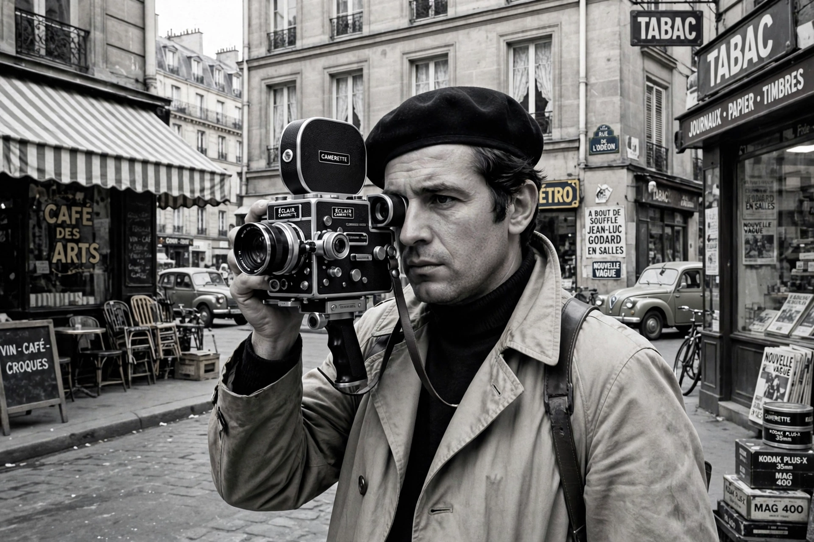

| Raoul Coutard | |
| Born | September 16, 1924, Paris, France |
|---|---|
| Died | November 8, 2016 (aged 92), Labenne, France |
| Occupation | Cinematographer, director |
| Years active | 1956–2001 |

Raoul Coutard (September 16, 1924 – November 8, 2016) was a French cinematographer best known for his collaboration with Jean-Luc Godard and the filmmakers of the French New Wave. His handheld, available-light photography on Breathless (1960) helped define the movement's raw, documentary immediacy.
Coutard served in French Indochina, where he worked as a war photographer, and afterwards freelanced as a photojournalist. He entered cinema almost by accident, agreeing to photograph a film in the belief it was a stills assignment — Pierre Schoendoerffer's The Devil's Pass (1958).
Godard engaged Coutard for Breathless, shot on location with a handheld Cameflex camera, fast film stock pushed in development, and natural light — techniques that liberated the camera from the studio. Coutard shot most of Godard's 1960s films, including A Woman Is a Woman (1961), Vivre sa vie (1962), Contempt (1963), Band of Outsiders (1964), Alphaville (1965), and Pierrot le Fou (1965), moving fluidly between black-and-white and saturated color. He also shot François Truffaut's Shoot the Piano Player (1960) and Jules and Jim (1962).
Coutard worked with Costa-Gavras on Z (1969) and The Confession (1970), and later renewed his partnership with Godard on Passion (1982), winning the Technical Grand Prize at Cannes. He also directed a handful of films, beginning with Hoa-Binh (1970).